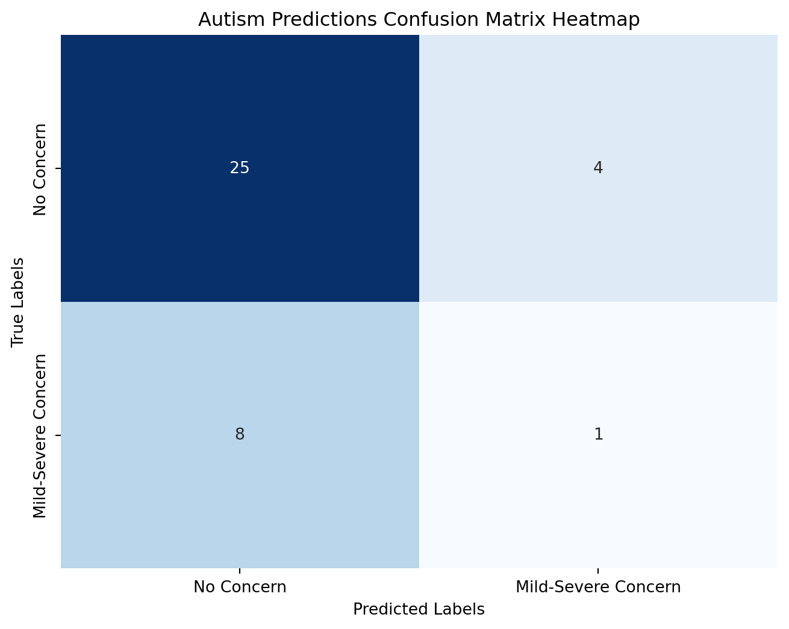
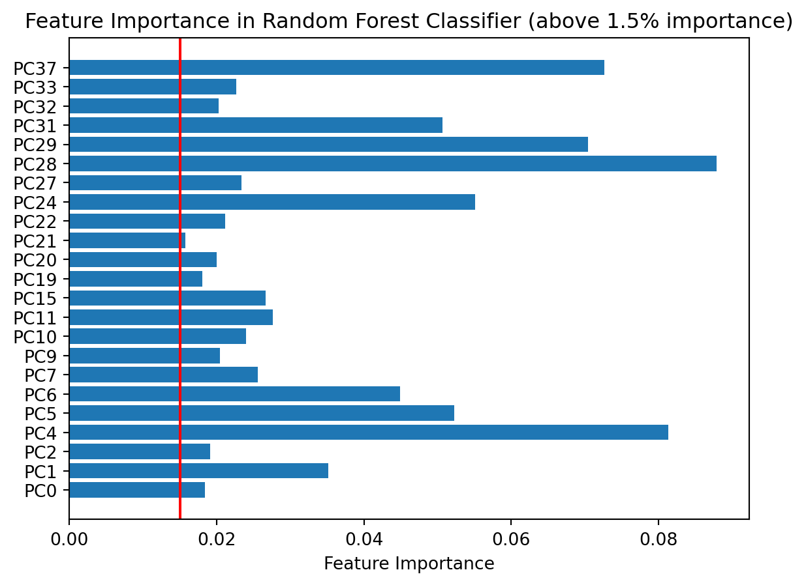

import os
from pathlib import Path
import pandas as pd
import matplotlib.pyplot as plt
import seaborn as sns
import numpy as np
import yaml
from sklearn.decomposition import PCA
from sklearn.model_selection import train_test_split
from sklearn.preprocessing import StandardScaler
from sklearn.metrics import \
accuracy_score,\
confusion_matrix,\
f1_score, \
make_scorer, \
precision_recall_fscore_support
from sklearn.model_selection import \
GridSearchCV, \
StratifiedKFold
from sklearn.ensemble import RandomForestClassifier
from scipy.stats import chi23 Random-Forest analysis of autism concern groups, features reduced with PCA
Machine learning analysis utilizing SKLearn’s Random Forest classifier and Grid Search of ASD Microbiome data
3.1 Preface
This document is written using Quarto, a modern scientific documentation tool by Postix. This tool functions like Rmarkdown or Jupyter and actually uses those tools to run the documents. It provides flexability in rendering documents and intigrates well with Posit’s other product, R Studio.
3.2 Imports
3.3 Get Data
3.3.1 Load Config
Loading data into env
with open('config.yaml', mode='r', encoding=None) as f:
config_data = yaml.safe_load(f)
figure_export = config_data["figure_export"] # default true
data_sources = config_data["data"]
param_grid = config_data["param_grid"]
hyperparameters = config_data["hyperparameters"]Yaml config data
figure_export: true
data:
rarefied_table: "data/rarefied_table.txt"
mapper: "data/mapper_book_copy_with_new_meta_titles copy.xlsx"
hyperparameters:
random_state: 42
training_split: 0.2
estimators: 100
n_jobs: -1
n_components: 0.60
param_grid:
max_features:
- ~
- sqrt
- log2
criterion:
- gini
- entropy
- log_loss
'class_weight':
- ~
- balanced
3.3.2 Hyperparameters
These hyperparameters are established in the config.yaml file but can be overriden using command line values using -P variable:value -P othervariable:value syntax.
# above tag allows parameters to be passed via cli
estimators = hyperparameters["estimators"]
n_components = hyperparameters["n_components"]
n_jobs = hyperparameters["n_jobs"]
randomState = hyperparameters["random_state"]
trainingSplit = hyperparameters["training_split"]3.3.3 Load dataframes
rarefiedData = pd.read_csv(data_sources["rarefied_table"], sep="\t")
mapper = pd.read_excel(data_sources["mapper"], sheet_name="Mapper 2025-03-21")
rarefiedData = rarefiedData.T
rarefiedData.columns = rarefiedData.iloc[0].values
rarefiedData = rarefiedData.iloc[1:]3.4 Create training and testing sets
3.4.1 Combining rarefied and asd status
adosClassification = mapper.loc[:, ["IDnumber", "@SampleID", "ADOSClassification"]]
# Filters out any potential stray IDs not part of out two groups
adosClassification = adosClassification[adosClassification["IDnumber"].str.contains('^[777|888]')]
autismClassification = adosClassification
autismClassification["ADOSClassification"] = \
adosClassification["ADOSClassification"].astype(str)
autismClassification = \
autismClassification[autismClassification["ADOSClassification"] != "nan"]
autismClassification["Autism"] = \
autismClassification["ADOSClassification"].transform(
lambda x: "No" if x == "Minimal to No concern" else "Yes"
)
autismClassification = autismClassification.drop(
columns = ["ADOSClassification"]
)
adosRarefiedData = pd.merge(
autismClassification,
rarefiedData,
left_on = "@SampleID",
right_index = True, how="inner")
adosRarefiedData/var/folders/0w/00j3lxtn6lq5n0jfhbsvrdd00000gn/T/ipykernel_6594/915451602.py:12: SettingWithCopyWarning:
A value is trying to be set on a copy of a slice from a DataFrame.
Try using .loc[row_indexer,col_indexer] = value instead
See the caveats in the documentation: https://pandas.pydata.org/pandas-docs/stable/user_guide/indexing.html#returning-a-view-versus-a-copy
autismClassification["Autism"] = \| IDnumber | @SampleID | Autism | 5fa6f990436cc98852c849cfc171976d | 9fc95dae73ec157e4f5ade5e0b205d51 | bf7ae65173c37bc3b210305f65760434 | 523f0825433a02f5156e465f0972bc02 | cf87b63430ff2925721ab988ad584f83 | 3c142dbbe6d67603d586ecb204a34cee | ec24451f7df9ad0d4edc00d327ba5b95 | ... | a3b79adce4a953d4c1c8777dafc43a64 | 86337e85ead9f35be4922027ed204e47 | 4bfc0f32efe482acd73c942b8d7cd588 | 35f42945e50c96278af7e268f124d56d | d7656aada2e1e434542c5b7ed5592105 | d7bee6730fc4894b26aee43930e74710 | 21d97d92de8f9fda7cc194d3245f039b | 304df219bf9ecbefbec639606e7bb98a | f75aac2353d9e8da5f200c15cf7a564e | e8dfa53470afb7592c0a10ecd09f758f | |
|---|---|---|---|---|---|---|---|---|---|---|---|---|---|---|---|---|---|---|---|---|---|
| 0 | 777-001 | asd965 | No | 0.0 | 0.0 | 0.0 | 0.0 | 0.0 | 0.0 | 0.0 | ... | 0.0 | 0.0 | 0.0 | 0.0 | 0.0 | 0.0 | 0.0 | 0.0 | 0.0 | 0.0 |
| 1 | 777-001 | asd966 | No | 0.0 | 0.0 | 0.0 | 0.0 | 0.0 | 0.0 | 6.2 | ... | 0.0 | 0.0 | 0.0 | 0.0 | 0.0 | 0.0 | 0.0 | 0.0 | 0.0 | 0.0 |
| 2 | 777-001 | asd1132 | No | 0.0 | 0.0 | 0.0 | 0.0 | 0.0 | 0.0 | 0.0 | ... | 0.0 | 0.0 | 0.0 | 0.0 | 0.0 | 0.0 | 0.0 | 0.0 | 0.0 | 0.0 |
| 3 | 777-001 | asd1133 | No | 0.0 | 0.0 | 0.0 | 0.0 | 0.0 | 0.0 | 10.8 | ... | 0.0 | 0.0 | 0.0 | 0.0 | 0.0 | 0.0 | 0.0 | 0.0 | 0.0 | 0.0 |
| 4 | 777-001 | asd1534 | No | 0.0 | 0.0 | 0.0 | 0.0 | 0.0 | 0.0 | 0.0 | ... | 0.0 | 0.0 | 0.0 | 0.0 | 0.0 | 0.0 | 0.0 | 0.0 | 0.0 | 0.0 |
| ... | ... | ... | ... | ... | ... | ... | ... | ... | ... | ... | ... | ... | ... | ... | ... | ... | ... | ... | ... | ... | ... |
| 287 | 888-029 | asd1407 | No | 0.0 | 0.0 | 0.0 | 0.0 | 0.0 | 0.0 | 0.0 | ... | 0.0 | 0.0 | 0.0 | 0.0 | 0.0 | 0.0 | 0.0 | 0.0 | 0.0 | 0.0 |
| 288 | 888-029 | asd1134 | No | 0.0 | 0.0 | 0.0 | 0.0 | 0.0 | 0.0 | 0.0 | ... | 0.0 | 0.0 | 0.0 | 0.0 | 0.0 | 0.0 | 0.0 | 0.0 | 0.0 | 0.0 |
| 289 | 888-029 | asd1135 | No | 0.0 | 0.0 | 0.0 | 0.0 | 0.0 | 0.0 | 0.0 | ... | 0.0 | 0.0 | 0.0 | 0.0 | 0.0 | 0.0 | 0.0 | 0.0 | 0.0 | 0.0 |
| 290 | 888-029 | asd1498 | No | 0.0 | 0.0 | 0.0 | 0.0 | 0.0 | 0.0 | 2.0 | ... | 0.0 | 0.0 | 0.0 | 0.0 | 0.0 | 0.0 | 0.0 | 0.0 | 0.0 | 0.0 |
| 291 | 888-029 | asd1499 | No | 0.0 | 0.0 | 0.0 | 0.0 | 0.0 | 0.0 | 3.2 | ... | 0.0 | 0.0 | 0.0 | 0.0 | 0.0 | 0.0 | 0.0 | 0.0 | 0.0 | 0.0 |
184 rows × 847 columns
3.4.2 Dividing training and testing
The following cells divide the data into training and testing sets. In order to keep the data clean, samples collected from a single individual, the IDnumber column, are divided togeather to avoid data bleed.
# filter IDnumber and Autism
# Y = autism, X = IDnumber
# filter whole table on IDnumber
# select real X values
temp_data = adosRarefiedData.loc[:,["IDnumber", "Autism"]]
temp_data = temp_data.drop_duplicates()
X_temp = temp_data.loc[:, "IDnumber"]
y_temp = temp_data.loc[:, "Autism"]
X_train_temp, X_test_temp, y_train_temp, y_test_temp = \
train_test_split(X_temp, y_temp, test_size=trainingSplit,random_state=randomState)train_data = adosRarefiedData[adosRarefiedData["IDnumber"].isin(X_train_temp)]
test_data = adosRarefiedData[adosRarefiedData["IDnumber"].isin(X_test_temp)]
not_in_y = ["Autism", "IDnumber", "@SampleID"]
y_train = train_data["Autism"].to_frame()
X_train = train_data.drop(columns = not_in_y)
y_test = test_data["Autism"].to_frame()
X_test = test_data.drop(columns = not_in_y)3.5 Training
The scaler rescales the features to fit between -1 and 1. This does not effect the outcome of the random forest but can help standardize inputs to increase efficiancy of training.
scaler = StandardScaler()
X_train = scaler.fit_transform(X_train)
X_test = scaler.transform(X_test)
y_test = y_test.to_numpy().ravel()
y_train = y_train.to_numpy().ravel()PCA for dimentionality reduction
pca = PCA(n_components=n_components)
X_train_pca = pca.fit_transform(X_train)
X_train_pca = pd.DataFrame(X_train_pca)GridSearchCV allows to train multiple Random Forest classifiers using various combinations of hyperparameters. The number of models trained is equal to \((\prod_{i=0}^{n}{|h_{i}|})*cv\) where \(|h_{i}|\) is the size of the param param_grid list and \(cv\) is the cross validation number. StratifiedKFold divides the training data into n “folds”. Each pass of training selects one of these folds to act as a validation set to track the model’s training. More information can be found here. 5 is an arbitrary value.
classifier = RandomForestClassifier(n_estimators=estimators, random_state=randomState)
custom_f1 = make_scorer(f1_score, pos_label='Yes')
cv = StratifiedKFold(n_splits=5, shuffle=True, random_state=randomState)
search = GridSearchCV(
estimator=classifier,
n_jobs=n_jobs,
param_grid=param_grid,
cv=cv,
scoring=custom_f1)
search.fit(X_train_pca, y_train)
search.best_estimator_.get_params(){'bootstrap': True,
'ccp_alpha': 0.0,
'class_weight': 'balanced',
'criterion': 'entropy',
'max_depth': None,
'max_features': None,
'max_leaf_nodes': None,
'max_samples': None,
'min_impurity_decrease': 0.0,
'min_samples_leaf': 1,
'min_samples_split': 2,
'min_weight_fraction_leaf': 0.0,
'monotonic_cst': None,
'n_estimators': 100,
'n_jobs': None,
'oob_score': False,
'random_state': 42,
'verbose': 0,
'warm_start': False}3.5.1 Prediction
X_test_pca = pca.transform(X_test)
y_pred = search.predict(X_test_pca)3.6 Evaluations
Precision and recall are inversly preportional. Both values are combined in the F_beta score. F_beta is the harmonic mean of precision and recall scaled using the \(\beta\) value. \(\beta\) determines if precision or recall is weighted more in the final score. \(\beta = 1\) equally balances both metrics; \(\beta > 1\) increases recalls weight and \(\beta < 1\) increases precisions weight. In this case, \(\beta\) is set to 1.
X_train_pca.columns = [f"PC{x}" for x in X_train_pca.columns]# Accuracy
accuracy = accuracy_score(y_test, y_pred)
precision, recall, fscore, _ = \
precision_recall_fscore_support(y_test, y_pred, average='weighted')
# Chi^2 Goodness of Fit
pred_counts = np.array([sum(y_pred == 'No'), sum(y_pred == 'Yes')])
null_counts = np.array([sum(y_test == 'No'), sum(y_test == 'Yes')])
# Confusion Matrix
conf_matrix = confusion_matrix(y_test, y_pred)
tickLabels = ["No Concern", "Mild-Severe Concern"]
plt.figure(figsize=(8, 6))
sns.heatmap(conf_matrix, annot=True, fmt='g', cmap='Blues', cbar=False,
xticklabels=tickLabels, yticklabels=tickLabels)
plt.title('Autism Predictions Confusion Matrix Heatmap')
plt.xlabel('Predicted Labels')
plt.ylabel('True Labels')
plt.show()
# McNemar's test
chi2_stat = (conf_matrix[0,1] - conf_matrix[1,0])**2 / (conf_matrix[0,1] + conf_matrix[1,0])
p_val = chi2.sf(chi2_stat, df=1)
print(
f"Accuracy: {accuracy * 100:.2f}%\n" \
f"Precision: {precision* 100:.2f}%\n" \
f"Recall: {recall* 100:.2f}%\n" \
f"F beta: {fscore:.2f}\n" \
f"Chi2 stat (McNemar's test): {chi2_stat:.2f}\n" \
f"Degrees of Freedom: {1}\n" \
f"p-value: {p_val:.2f}"
)
Accuracy: 68.42%
Precision: 62.55%
Recall: 68.42%
F beta: 0.65
Chi2 stat (McNemar's test): 1.33
Degrees of Freedom: 1
p-value: 0.25Here, we show the otu barcodes who most contributed to the best model’s predictions. A cut off of \(0.1\) is used to filter the most significant OTUs/features.
best_model = search.best_estimator_
principle_components = best_model.feature_importances_
important_indices = np.where(principle_components > 0.015)[0]
filtered_principle_components = pd.DataFrame({
"components": X_train_pca.columns[important_indices],
"importance": principle_components[important_indices]
})
plt.barh(filtered_principle_components.components, filtered_principle_components.importance)
plt.axvline(x=0.015, color='r', linestyle='-', label='Critical Value')
plt.xlabel('Feature Importance')
plt.title('Feature Importance in Random Forest Classifier (above 1.5% importance)')
plt.show()